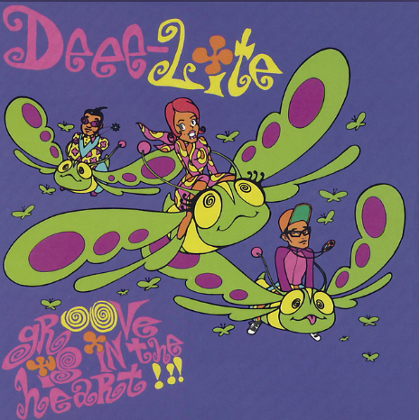

✿ Lab 9 - JavaScript for the Web ✿
Challenge
I had to experiment a bit to get document.write() to work.
Problems
No promblems!
Reflection
I feel verrry lucky to have the partner I do, they're so helpful! We worked on this lab right after class, so all the content was fresh in our minds, super helpful.
Results
The output will appear here!